CODING AGENTS AS PIXEL WORLD MODELS
traex/GPT-6.1-Sol · 0147
点击播放 · 原生 RGB 像素
逐轮保存的候选
回放视频、检查图与代码变化。
每份候选均可单独播放。实际图片检查记录在下方工具轨迹中。
候选 01播放与检查图
点击播放 · 原生 RGB 像素

展开代码变化
--- 上一保存版本
+++ 本次保存版本
@@ -0,0 +1,133 @@
+"""Recreate the fixed tabletop view with a rolling textured sphere."""
+from pathlib import Path
+import numpy as np
+import cv2
+from PIL import Image
+from scipy.ndimage import map_coordinates, gaussian_filter
+import artifact_io
+
+ROOT=Path(__file__).resolve().parent
+W,H=256,144
+
+def plate_and_object(src):
+ # Reconstruct only the small patch of tabletop initially hidden by the ball.
+ mask=np.zeros((H,W),np.uint8)
+ cv2.ellipse(mask,(51,47),(13,12),0,0,360,255,-1)
+ cv2.fillPoly(mask,[np.array([(52,40),(69,35),(75,40),(73,49),(57,58)],np.int32)],255)
+ mask[:,73:]=0
+ plate=cv2.inpaint(src,mask,5,cv2.INPAINT_TELEA).astype(np.float32)
+ smoothed=gaussian_filter(plate,(1.1,1.1,0))
+ soft=cv2.GaussianBlur(mask.astype(np.float32)/255,(0,0),1.0)
+ plate=plate*(1-soft[...,None]*.6)+smoothed*(soft[...,None]*.6)
+ # Grain detail comes from the same piece of wood immediately below the patch.
+ detail=src.astype(float)-gaussian_filter(src.astype(float),(1.8,2.8,0))
+ yy,xx=np.mgrid[:H,:W]
+ patch=(mask>0)&(yy>38)
+ grain=detail[np.minimum(yy+27,H-1),xx]
+ plate+=grain*patch[...,None]*.42
+ # Preserve exact original pixels outside the reconstructed patch.
+ plate=np.where((mask>0)[...,None],plate,src)
+ # The original cast shadow, apart from the sphere itself.
+ nx=(xx-50.2)/8.6; ny=(yy-47.3)/8.7
+ rad=np.sqrt(nx*nx+ny*ny)
+ sph=(1-np.clip((rad-.93)/.13,0,1))[...,None]
+ shade=np.minimum(src.astype(float)-plate,0)
+ shade*=1-sph
+ shade*=cv2.GaussianBlur(mask.astype(float)/255,(0,0),.45)[...,None]
+ return plate,shade
+
+# Shaded sphere fitted to the diffuse grey finish in the supplied still.
+COEFF=np.array([[48.465529,38.705173,31.060068],
+ [-29.341238,-27.708927,-29.521363],
+ [5.390323,4.529483,4.062210],
+ [29.848041,38.420937,49.169454]],float)
+
+def field(nx,ny,nz):
+ return COEFF[0]+nx[...,None]*COEFF[1]+ny[...,None]*COEFF[2]+nz[...,None]*COEFF[3]
+
+def texture(src):
+ yy,xx=np.mgrid[:H,:W]
+ u=(xx-50.2)/8.6; v=(yy-47.3)/8.7
+ d=u*u+v*v
+ z=np.sqrt(np.maximum(0,1-d))
+ residual=src.astype(float)-field(u,v,z)
+ residual*=np.clip((.99-np.sqrt(d))/.22,0,1)[...,None]
+ residual=gaussian_filter(residual,(.3,.3,0))
+ return residual
+
+def shade_mask():
+ # The shade remains stationary and is in front of the ball's straight path.
+ s=4
+ m=np.zeros((H*s,W*s),np.uint8)
+ outline=np.array([(73.4,42.0),(103.5,20.3),(138.4,29.0),
+ (143.4,84.7),(120.0,110.8),(90.2,94.0)],float)
+ cv2.fillPoly(m,[np.round(outline*s).astype(np.int32)],255)
+ # Edge coverage only; the source shade texture is never replaced.
+ m=cv2.GaussianBlur(m.astype(float)/255,(0,0),.42*s)
+ return cv2.resize(m,(W,H),interpolation=cv2.INTER_AREA)
+
+def sphere_layer(cx,cy,rx,ry,theta,residual):
+ # Local supersampled sphere, with a rotating surface under fixed illumination.
+ scale=4
+ x0=max(0,int(np.floor(cx-rx-4)));x1=min(W,int(np.ceil(cx+rx+4)))
+ y0=max(0,int(np.floor(cy-ry-4)));y1=min(H,int(np.ceil(cy+ry+4)))
+ if x1<=x0 or y1<=y0: return None
+ xs=x0+(np.arange((x1-x0)*scale)+.5)/scale-.5
+ ys=y0+(np.arange((y1-y0)*scale)+.5)/scale-.5
+ X,Y=np.meshgrid(xs,ys)
+ nx=(X-cx)/rx;ny=(Y-cy)/ry
+ d=nx*nx+ny*ny
+ nz=np.sqrt(np.maximum(0,1-d))
+ alpha=(d<=1).astype(float)
+ # Rotation axis is perpendicular to the projected rolling direction.
+ axis=np.array([-.14,1.,0.]);axis/=np.linalg.norm(axis)
+ p=np.stack((nx,ny,nz),axis=-1)
+ c=np.cos(theta);s=np.sin(theta)
+ q=p*c-np.cross(axis,p)*s+np.sum(p*axis,axis=-1)[...,None]*axis*(1-c)
+ tx=50.2+q[...,0]*8.6
+ ty=47.3+q[...,1]*8.7
+ # An unobserved rear hemisphere uses the same soft felt texture.
+ tex=np.stack([map_coordinates(residual[...,ch],[ty,tx],order=1,mode='nearest') for ch in range(3)],-1)
+ lighting=field(nx,ny,nz)
+ color=np.clip(lighting+tex,0,255)
+ # A very low contrast curved felt seam, visible only as the surface rotates.
+ seam_distance=np.abs(q[...,2]-.48*(q[...,0]**2-q[...,1]**2))
+ seam=np.exp(-(seam_distance/.055)**2)*np.clip(nz,0,1)*2.5
+ color+=seam[...,None]
+ premult=color*alpha[...,None]
+ alpha=gaussian_filter(alpha,.48*scale)
+ premult=gaussian_filter(premult,(.48*scale,.48*scale,0))
+ alpha=cv2.resize(alpha,(x1-x0,y1-y0),interpolation=cv2.INTER_AREA)
+ premult=cv2.resize(premult,(x1-x0,y1-y0),interpolation=cv2.INTER_AREA)
+ return x0,y0,x1,y1,alpha,premult
+
+def generate():
+ src=np.array(Image.open(ROOT/'first_frame.png').convert('RGB'))
+ plate,original_shadow=plate_and_object(src)
+ residual=texture(src)
+ occ=shade_mask()
+ yy,xx=np.mgrid[:H,:W]
+ result=[src.copy()]
+ for i in range(1,20):
+ t=i/4
+ # Constant-rate real-time rolling, with weak rolling resistance.
+ dx=54*t-t*t
+ cx=50.2+dx
+ cy=47.3+.14*dx
+ size=1+.00025*dx
+ rx=8.6*size;ry=8.7*size
+ theta=dx/8.65
+ moved_shadow=np.stack([map_coordinates(original_shadow[...,c],[yy-.14*dx,xx-dx],order=1,mode='constant',cval=0) for c in range(3)],-1)
+ moved_shadow*= (1-occ)[...,None]
+ out=plate.astype(float)+moved_shadow
+ layer=sphere_layer(cx,cy,rx,ry,theta,residual)
+ if layer:
+ x0,y0,x1,y1,a,p=layer
+ visible=1-occ[y0:y1,x0:x1]
+ a*=visible;p*=visible[...,None]
+ out[y0:y1,x0:x1]=out[y0:y1,x0:x1]*(1-a[...,None])+p
+ result.append(np.clip(np.rint(out),0,255).astype(np.uint8))
+ frames=np.stack(result)
+ artifact_io.save(frames,ROOT)
+
+if __name__=='__main__': generate()
候选 02播放与检查图
点击播放 · 原生 RGB 像素
展开代码变化
--- 上一保存版本
+++ 本次保存版本
@@ -101,6 +101,20 @@
premult=cv2.resize(premult,(x1-x0,y1-y0),interpolation=cv2.INTER_AREA)
return x0,y0,x1,y1,alpha,premult
+def cast_shadow(cx,cy,size,xx,yy):
+ # Elliptical projection of the sphere from the low front-left light.
+ angle=-.48
+ x=xx-(cx+11.2*size)
+ y=yy-(cy+1.1*size)
+ u=x*np.cos(angle)+y*np.sin(angle)
+ v=-x*np.sin(angle)+y*np.cos(angle)
+ d=(u/(16.2*size))**2+(v/(5.3*size))**2
+ shadow=.64*np.clip((1.14-d)/.25,0,1)
+ shadow=gaussian_filter(shadow,1.15)
+ # Small, soft contact darkening directly at the table tangent.
+ contact=.24*np.exp(-((xx-cx-1)/(6.4*size))**2-((yy-cy-8.1*size)/(1.6*size))**2)
+ return 1-(1-shadow)*(1-contact)
+
def generate():
src=np.array(Image.open(ROOT/'first_frame.png').convert('RGB'))
plate,original_shadow=plate_and_object(src)
@@ -117,9 +131,8 @@
size=1+.00025*dx
rx=8.6*size;ry=8.7*size
theta=dx/8.65
- moved_shadow=np.stack([map_coordinates(original_shadow[...,c],[yy-.14*dx,xx-dx],order=1,mode='constant',cval=0) for c in range(3)],-1)
- moved_shadow*= (1-occ)[...,None]
- out=plate.astype(float)+moved_shadow
+ shadow=cast_shadow(cx,cy,size,xx,yy)*(1-occ)
+ out=plate.astype(float)*(1-shadow[...,None])
layer=sphere_layer(cx,cy,rx,ry,theta,residual)
if layer:
x0,y0,x1,y1,a,p=layer
候选 03播放与检查图
点击播放 · 原生 RGB 像素
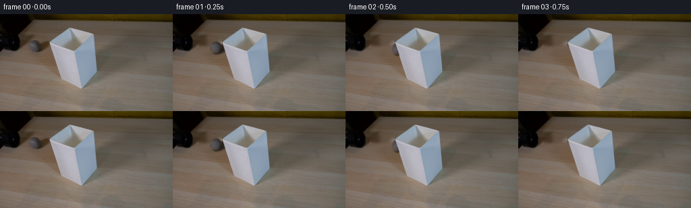
展开代码变化
--- 上一保存版本
+++ 本次保存版本
@@ -132,7 +132,7 @@
rx=8.6*size;ry=8.7*size
theta=dx/8.65
shadow=cast_shadow(cx,cy,size,xx,yy)*(1-occ)
- out=plate.astype(float)*(1-shadow[...,None])
+ out=plate.astype(float)*(1-shadow[...,None]*np.array([.80,.91,1.04]))
layer=sphere_layer(cx,cy,rx,ry,theta,residual)
if layer:
x0,y0,x1,y1,a,p=layer
候选 04播放与检查图
可观测工具轨迹
实际执行的命令与返回图片。
命令 1exit 0
/bin/bash -lc "ls -la && cat prompt.txt && printf '\\n---RULES---\\n' && cat GENERATION_RULES.md"
命令 2exit 0
/bin/bash -lc "cat artifact_io.py && python - <<'PY'
from PIL import Image
im=Image.open('first_frame.png'); print(im.size)
im.resize((1024,576)).save('.tmp/first_large.png')
PY"命令 3exit 0
/bin/bash -lc "python - <<'PY'
from PIL import Image
im=Image.open('first_frame.png')
im.crop((30,28,85,67)).resize((660,468)).save('.tmp/ball_crop.png')
import importlib.util
for m in ['numpy','scipy','cv2']: print(m, bool(importlib.util.find_spec(m)))
PY"命令 4exit 0
/bin/bash -lc "python - <<'PY'
from PIL import Image
im=Image.open('first_frame.png'); im.crop((32,30,85,65)).resize((848,560),Image.Resampling.NEAREST).save('.tmp/ball_nearest.png')
PY"命令 5exit 0
/bin/bash -lc "python - <<'PY'
from PIL import Image,ImageDraw
im=Image.open('first_frame.png').resize((1024,576)); d=ImageDraw.Draw(im)
for x in range(0,256,10):
d.line((x*4,0,x*4,576),fill=(160,50,50),width=1);d.text((x*4+2,2),str(x),fill='red')
for y in range(0,144,10):
d.line((0,y*4,1024,y*4),fill=(160,50,50),width=1);d.text((0,y*4+2),str(y),fill='red')
im.save('.tmp/grid.png')
PY"命令 6exit 0
/bin/bash -lc "cat > .tmp/test_plate.py <<'PY'
import cv2,numpy as np
from PIL import Image
im=np.asarray(Image.open('first_frame.png'))
y,x=np.mgrid[:144,:256]
mask=np.zeros((144,256),np.uint8)
cv2.ellipse(mask,(51,47),(13,12),0,0,360,255,-1)
cv2.fillPoly(mask,[np.array([(52,40),(69,35),(75,40),(73,49),(57,58)],np.int32)],255)
# do not affect shade itself
mask[:,73:]=0
for mode,name in [(cv2.INPAINT_TELEA,'telea'),(cv2.INPAINT_NS,'ns')]:
p=cv2.inpaint(im,mask,5,mode);Image.fromarray(p).resize((1024,576)).save('.tmp/plate_'+name+'.png')
Image.fromarray(mask).save('.tmp/mask.png')
PY
python .tmp/test_plate.py"命令 7exit 0
/bin/bash -lc "python - <<'PY'
from PIL import Image
import numpy as np
im=np.array(Image.open('first_frame.png'))
for y in range(37,58):
print(y,' '.join('%3d'%v for v in im[y,39:64].mean(axis=1)))
PY"命令 8exit 0
/bin/bash -lc "python - <<'PY'
from PIL import Image
import numpy as np
im=np.asarray(Image.open('first_frame.png'))
for x,y in [(50,47),(46,46),(48,50),(50,40),(56,47),(53,53),(45,42),(50,52),(51,44)]: print(x,y,im[y,x])
PY"命令 9exit 0
/bin/bash -lc "python - <<'PY'
import numpy as np
from PIL import Image
im=np.asarray(Image.open('first_frame.png')).astype(float)
y,x=np.mgrid[0:144,0:256]
nx=(x-50.2)/8.4;ny=(y-47.1)/8.6;d=nx*nx+ny*ny
s=d<.74
X=np.array([np.ones(s.sum()),nx[s],ny[s],np.sqrt(1-d[s])]).T
v=im[s]
a=np.linalg.lstsq(X,v,rcond=None)[0]
print(a)
PY"命令 10exit 0
/bin/bash -lc "cat > generate.py <<'PY'
\"\"\"Recreate the fixed tabletop view with a rolling textured sphere.\"\"\"
from pathlib import Path
import numpy as np
import cv2
from PIL import Image
from scipy.ndimage import map_coordinates, gaussian_filter
import artifact_io
ROOT=Path(__file__).resolve().parent
W,H=256,144
def plate_and_object(src):
# Reconstruct only the small patch of tabletop initially hidden by the ball.
mask=np.zeros((H,W),np.uint8)
cv2.ellipse(mask,(51,47),(13,12),0,0,360,255,-1)
cv2.fillPoly(mask,[np.array([(52,40),(69,35),(75,40),(73,49),(57,58)],np.int32)],255)
mask[:,73:]=0
plate=cv2.inpaint(src,mask,5,cv2.INPAINT_TELEA).astype(np.float32)
smoothed=gaussian_filter(plate,(1.1,1.1,0))
soft=cv2.GaussianBlur(mask.astype(np.float32)/255,(0,0),1.0)
plate=plate*(1-soft[...,None]*.6)+smoothed*(soft[...,None]*.6)
# Grain detail comes from the same piece of wood immediately below the patch.
detail=src.astype(float)-gaussian_filter(src.astype(float),(1.8,2.8,0))
yy,xx=np.mgrid[:H,:W]
patch=(mask>0)&(yy>38)
grain=detail[np.minimum(yy+27,H-1),xx]
plate+=grain*patch[...,None]*.42
# Preserve exact original pixels outside the reconstructed patch.
plate=np.where((mask>0)[...,None],plate,src)
# The original cast shadow, apart from the sphere itself.
nx=(xx-50.2)/8.6; ny=(yy-47.3)/8.7
rad=np.sqrt(nx*nx+ny*ny)
sph=(1-np.clip((rad-.93)/.13,0,1))[...,None]
shade=np.minimum(src.astype(float)-plate,0)
shade*=1-sph
shade*=cv2.GaussianBlur(mask.astype(float)/255,(0,0),.45)[...,None]
return plate,shade
# Shaded sphere fitted to the diffuse grey finish in the supplied still.
COEFF=np.array([[48.465529,38.705173,31.060068],
[-29.341238,-27.708927,-29.521363],
[5.390323,4.529483,4.062210],
[29.848041,38.420937,49.169454]],float)
def field(nx,ny,nz):
return COEFF[0]+nx[...,None]*COEFF[1]+ny[...,None]*COEFF[2]+nz[...,None]*COEFF[3]
def texture(src):
yy,xx=np.mgrid[:H,:W]
u=(xx-50.2)/8.6; v=(yy-47.3)/8.7
d=u*u+v*v
z=np.sqrt(np.maximum(0,1-d))
residual=src.astype(float)-field(u,v,z)
residual*=np.clip((.99-np.sqrt(d))/.22,0,1)[...,None]
residual=gaussian_filter(residual,(.3,.3,0))
return residual
def shade_mask():
# The shade remains stationary and is in front of the ball's straight path.
s=4
m=np.zeros((H*s,W*s),np.uint8)
outline=np.array([(73.4,42.0),(103.5,20.3),(138.4,29.0),
(143.4,84.7),(120.0,110.8),(90.2,94.0)],float)
cv2.fillPoly(m,[np.round(outline*s).astype(np.int32)],255)
# Edge coverage only; the source shade texture is never replaced.
m=cv2.GaussianBlur(m.astype(float)/255,(0,0),.42*s)
return cv2.resize(m,(W,H),interpolation=cv2.INTER_AREA)
def sphere_layer(cx,cy,rx,ry,theta,residual):
# Local supersampled sphere, with a rotating surface under fixed illumination.
scale=4
x0=max(0,int(np.floor(cx-rx-4)));x1=min(W,int(np.ceil(cx+rx+4)))
y0=max(0,int(np.floor(cy-ry-4)));y1=min(H,int(np.ceil(cy+ry+4)))
if x1<=x0 or y1<=y0: return None
xs=x0+(np.arange((x1-x0)*scale)+.5)/scale-.5
ys=y0+(np.arange((y1-y0)*scale)+.5)/scale-.5
X,Y=np.meshgrid(xs,ys)
nx=(X-cx)/rx;ny=(Y-cy)/ry
d=nx*nx+ny*ny
nz=np.sqrt(np.maximum(0,1-d))
alpha=(d<=1).astype(float)
# Rotation axis is perpendicular to the projected rolling direction.
axis=np.array([-.14,1.,0.]);axis/=np.linalg.norm(axis)
p=np.stack((nx,ny,nz),axis=-1)
c=np.cos(theta);s=np.sin(theta)
q=p*c-np.cross(axis,p)*s+np.sum(p*axis,axis=-1)[...,None]*axis*(1-c)
tx=50.2+q[...,0]*8.6
ty=47.3+q[...,1]*8.7
# An unobserved rear hemisphere uses the same soft felt texture.
tex=np.stack([map_coordinates(residual[...,ch],[ty,tx],order=1,mode='nearest') for ch in range(3)],-1)
lighting=field(nx,ny,nz)
color=np.clip(lighting+tex,0,255)
# A very low contrast curved felt seam, visible only as the surface rotates.
seam_distance=np.abs(q[...,2]-.48*(q[...,0]**2-q[...,1]**2))
seam=np.exp(-(seam_distance/.055)**2)*np.clip(nz,0,1)*2.5
color+=seam[...,None]
premult=color*alpha[...,None]
alpha=gaussian_filter(alpha,.48*scale)
premult=gaussian_filter(premult,(.48*scale,.48*scale,0))
alpha=cv2.resize(alpha,(x1-x0,y1-y0),interpolation=cv2.INTER_AREA)
premult=cv2.resize(premult,(x1-x0,y1-y0),interpolation=cv2.INTER_AREA)
return x0,y0,x1,y1,alpha,premult
def generate():
src=np.array(Image.open(ROOT/'first_frame.png').convert('RGB'))
plate,original_shadow=plate_and_object(src)
residual=texture(src)
occ=shade_mask()
yy,xx=np.mgrid[:H,:W]
result=[src.copy()]
for i in range(1,20):
t=i/4
# Constant-rate real-time rolling, with weak rolling resistance.
dx=54*t-t*t
cx=50.2+dx
cy=47.3+.14*dx
size=1+.00025*dx
rx=8.6*size;ry=8.7*size
theta=dx/8.65
moved_shadow=np.stack([map_coordinates(original_shadow[...,c],[yy-.14*dx,xx-dx],order=1,mode='constant',cval=0) for c in range(3)],-1)
moved_shadow*= (1-occ)[...,None]
out=plate.astype(float)+moved_shadow
layer=sphere_layer(cx,cy,rx,ry,theta,residual)
if layer:
x0,y0,x1,y1,a,p=layer
visible=1-occ[y0:y1,x0:x1]
a*=visible;p*=visible[...,None]
out[y0:y1,x0:x1]=out[y0:y1,x0:x1]*(1-a[...,None])+p
result.append(np.clip(np.rint(out),0,255).astype(np.uint8))
frames=np.stack(result)
artifact_io.save(frames,ROOT)
if __name__=='__main__': generate()
PY
python generate.py"命令 11exit 0
/bin/bash -lc "python - <<'PY'
from PIL import Image
im=Image.open('frames/08.png');im.resize((1024,576)).save('.tmp/frame8.png')
im=Image.open('frames/01.png');im.resize((1024,576)).save('.tmp/frame1.png')
PY"命令 12exit 0
/bin/bash -lc "python generate.py && python - <<'PY'
from PIL import Image
Image.open('frames/08.png').resize((1024,576)).save('.tmp/frame8_v2.png')
PY"命令 13exit 0
/bin/bash -lc "python generate.py && python - <<'PY'
import numpy as np
from PIL import Image
from pathlib import Path
p=np.load('pixels.npz')['pixels']
first=np.array(Image.open('first_frame.png').convert('RGB'),dtype=np.uint32)
assert p.shape==(144,256,20)
assert np.array_equal(p[...,0],(first[...,0]<<16)|(first[...,1]<<8)|first[...,2])
assert len(list(Path('frames').glob('*.png')))==20
print('Validated 20 RGB frames, 256x144, 4 fps; exact initial frame.')
PY"视觉工具实际返回图片 1
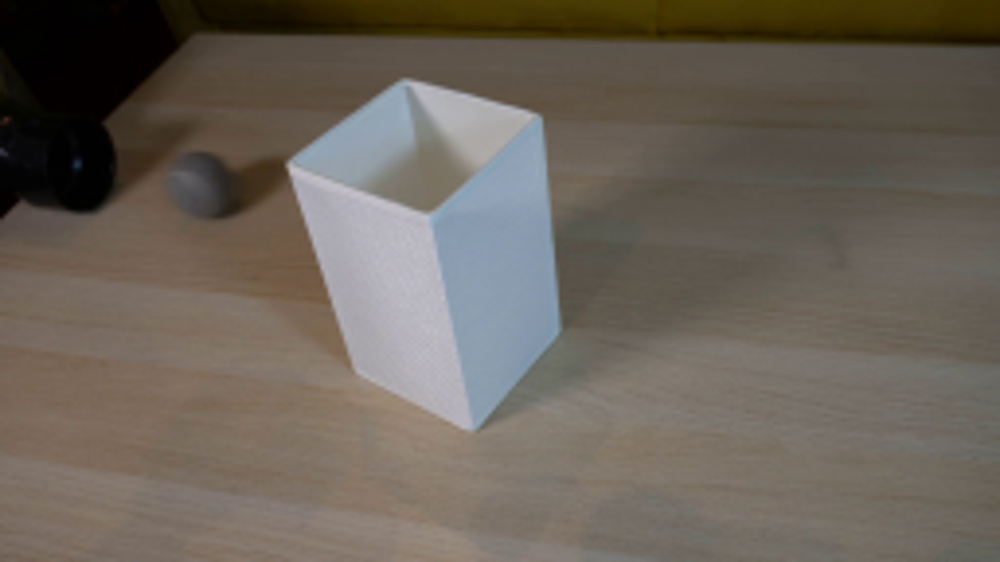
视觉工具实际返回图片 2
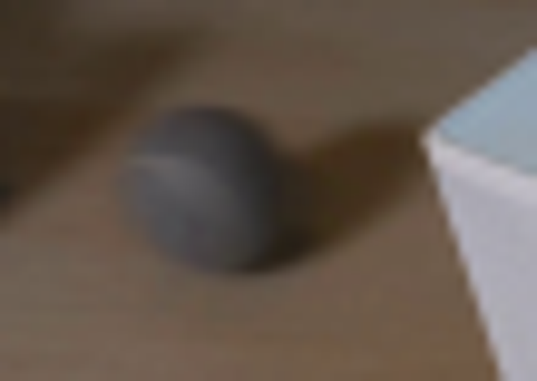
视觉工具实际返回图片 3
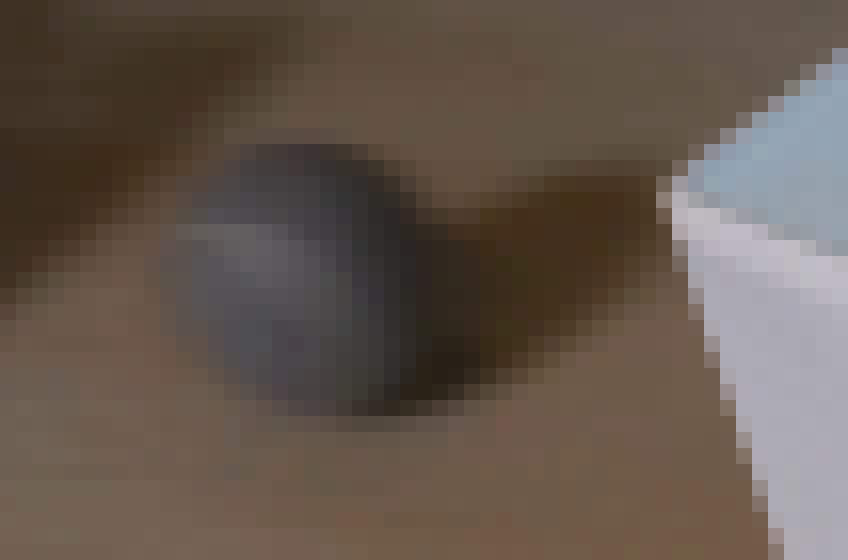
视觉工具实际返回图片 4
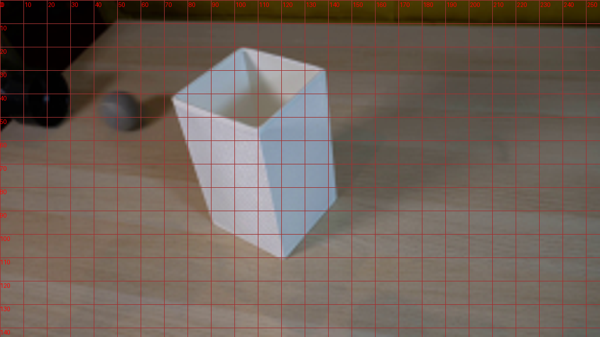
视觉工具实际返回图片 5
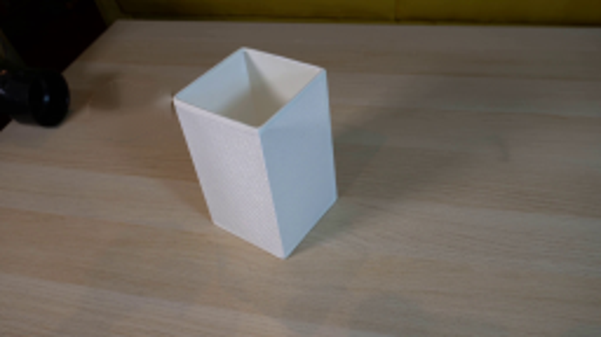
视觉工具实际返回图片 6
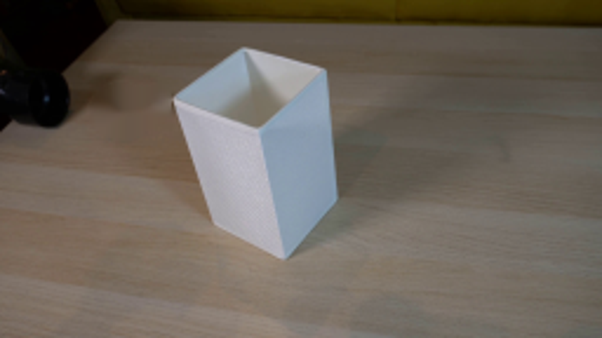
视觉工具实际返回图片 7
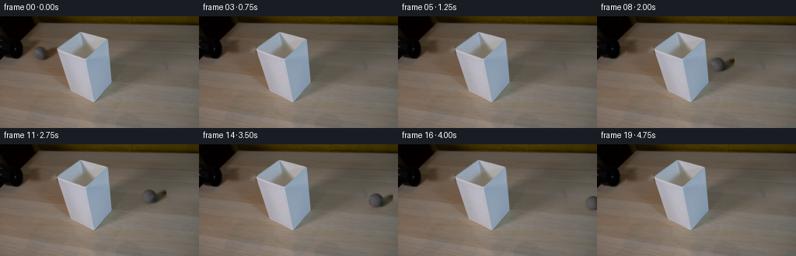
视觉工具实际返回图片 8
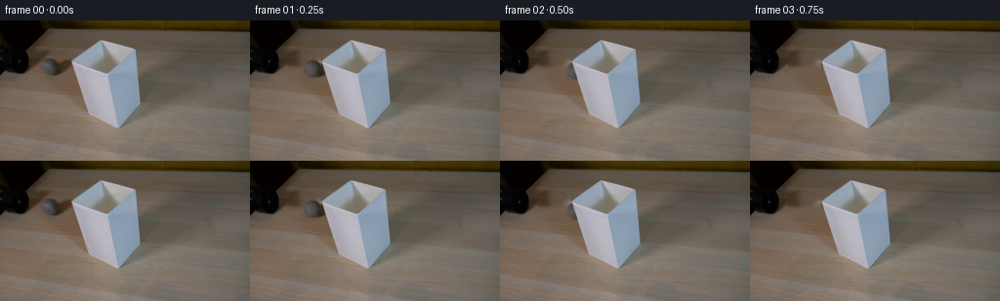
视觉工具实际返回图片 9
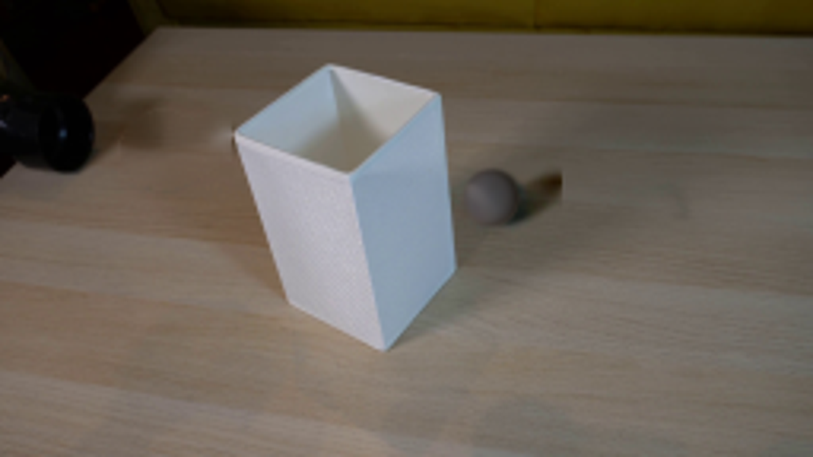
视觉工具实际返回图片 10
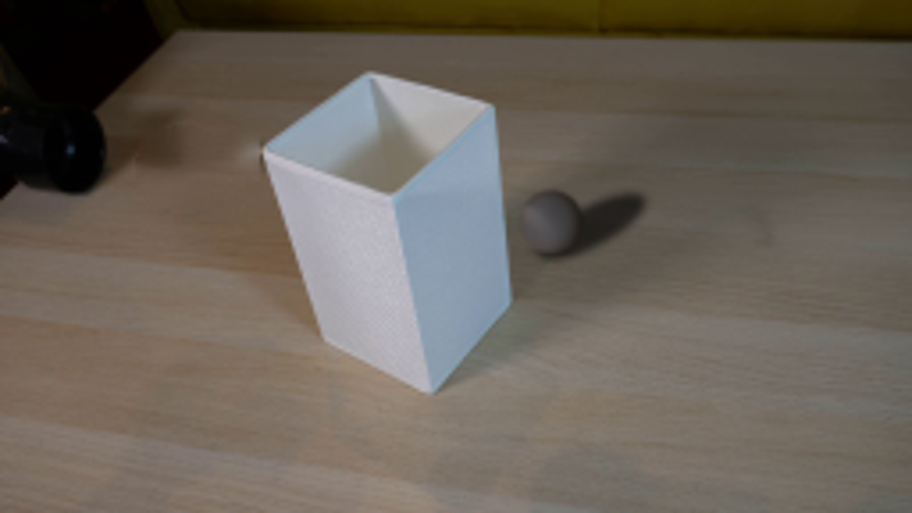
保存候选 4 份；完成命令 13 次；可验证图片返回 10 张。原始 API 响应与完整日志保留在本地。